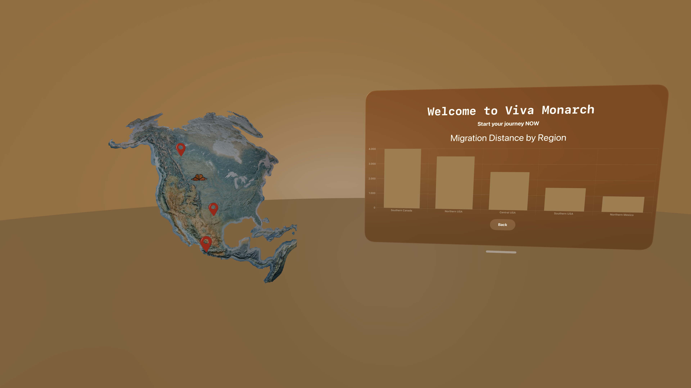
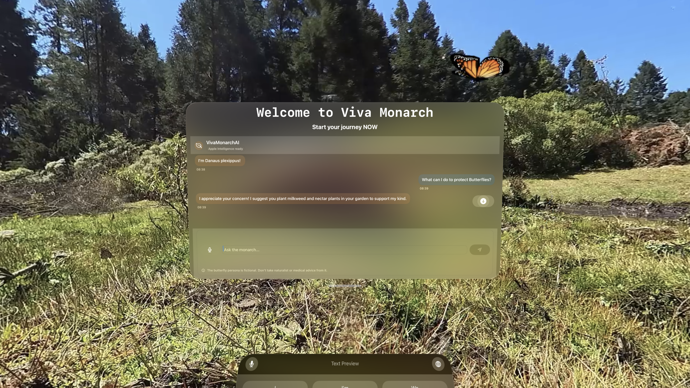
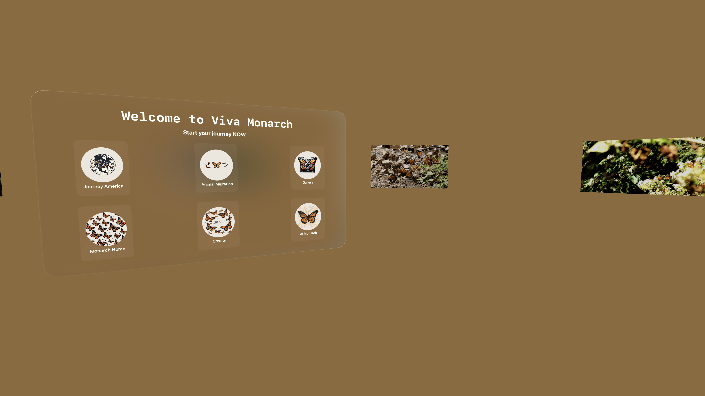
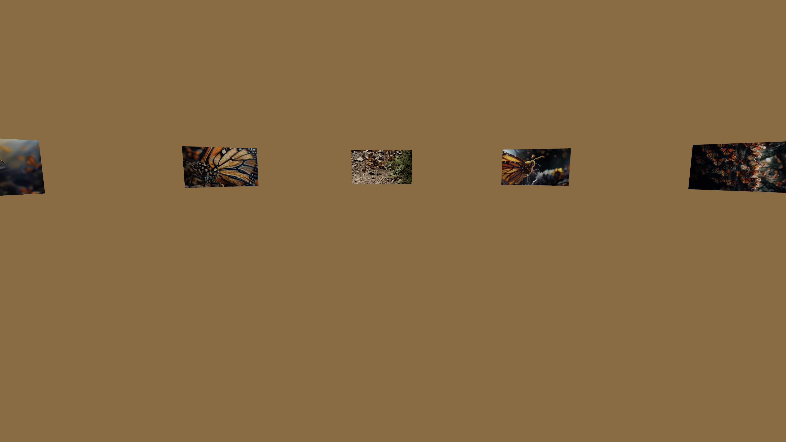
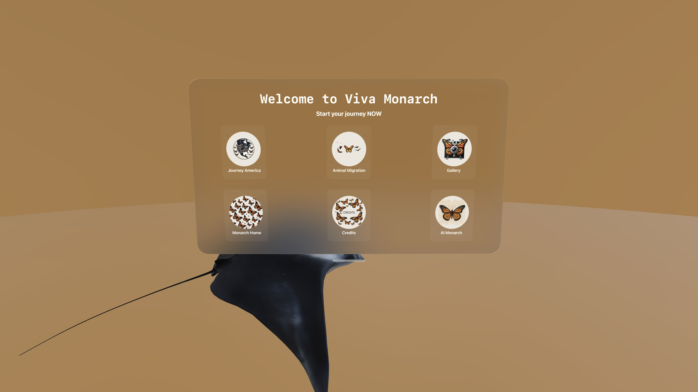
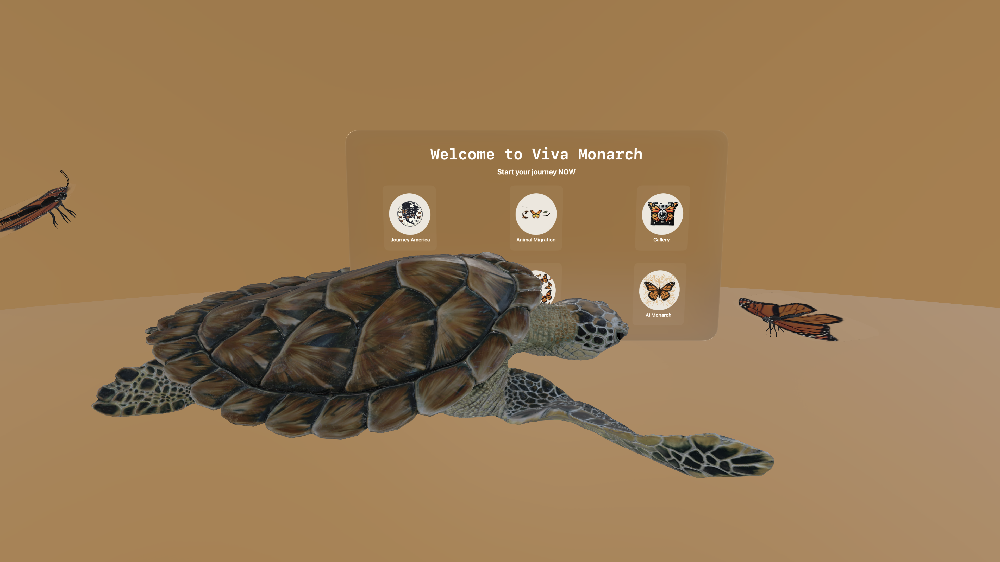
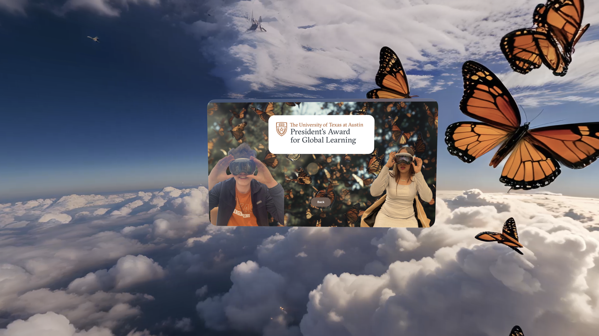

Main Screen 360° in Michoacán
Step into a monarch sanctuary. The main screen places you in a 360° scene from the oyamel fir forests of Michoacán, with butterflies swirling around you. Feel their density, hear the wingbeats, and start your journey.

We optimize for comfort, clarity, and presence—so you can simply look and learn.

Monarch AI Ask anything
Powered by Apple Intelligence, the in-app assistant answers questions about monarch biology, migration, conservation, and the latest science. Speak naturally and get succinct, trustworthy answers.
- Conversational Q&A about life cycle, threats, and how to help.
- Contextual prompts that adapt to the scene you’re viewing.
- Privacy-minded by design.

Migration Through the Americas
Trace multi-generation routes from Mexico to the U.S. and Canada and back again. Understand timing, flyways, nectar corridors, and overwintering needs in an explorable, spatial storyboard.
- Spring: Northward leapfrogging from Mexico into Texas and beyond.
- Summer: Expansion across the Midwest and southern Canada.
- Fall: Orientation south, returning to Mexico’s high-elevation forests.
Monarch Butterfly Gallery
Selected photos from our Mexico field trip wings, clusters, and close ups.


Animal Migration Beyond Monarchs
Migration is a global story. This space showcases other travelers like sea turtles and birds to place monarchs in a wider ecological context and spark curiosity about shared challenges.
- Compare distances, timing, and navigation cues across species.
- See how climate and habitat shifts ripple through different migrations.


Bonus Thank You
With gratitude to Jan Steinhauer and Cynthia Fernanda Mendoza Pimentel for their outstanding work and field efforts, and to the University of Texas at Austin for support and inspiration.
This project celebrates collaboration across design, science, and storytelling— bringing the migration closer to everyone.
